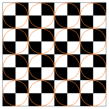

The Canon
Objective of the Game.
The objective of the game is to checkmate the enemy's king. In the first turn, standard rules only apply. Starting in the second turn, players have three choices on how to play. A) move as normal. B) 'spin' one of your piece/s (make sure there are no enemy pieces on the 2x2 spinning area). C) make a normal move first, then 'spin' only the 2x2 area your piece moved in.
Rules on 'Spinning'
- All spins must be made along pre-existing 2x2 'spin' areas, as shown in red circles in the figure below. Spins are made by shifting every piece in the 2x2 area either 90 degrees left or right. You cannot spin on the first turn. Areas with your own or an enemy king cannot be spun.

- You cannot move a piece after you spin, as your turn ends when you do so. However, you can choose not to spin, or not to move a piece, as long as you choose to do one or both of the actions
- If you won't move a piece, you may spin any area that has only your own pieces. Otherwise, you may choose to spin the area your piece lands on.
- For games requiring Algebraic Notation (the system chess uses to record moves using coordinates and names), the same system could be used, with the added 'R' for clockwise and 'L' for anti-clockwise spins (e.g. Nf5R, meaning the knight moves to f5, then spins clockwise). The board will be split into 16 2x2 areas, starting with 1 (a1,a2,b1,b2) at the bottom left of the board, 2, (a3,a4,b3,b4) to the right of 1, and so on until 16 (g7,g8,h7,h8) at the top right of the board. For turns with spins and no moves, this numbering system will be used, so if a player chooses to move a whole area that contains b4 anti-clockwise, the Algebraic Notation will be 2L.
- If you 'spin' either of the rooks (assuming neither have been spun or moved before), they lose the ability to castle with the king. The same goes for the pawns' special 'en pessant' move.